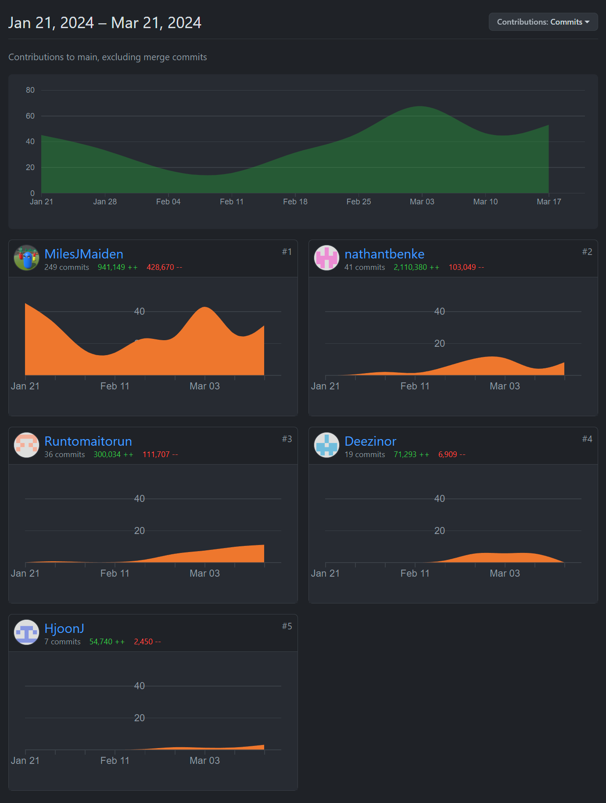
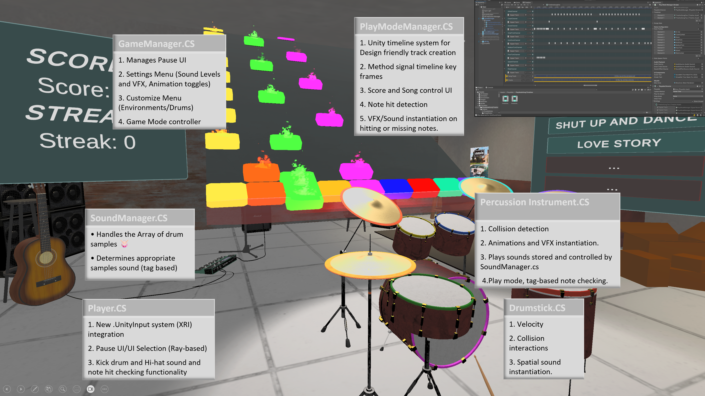
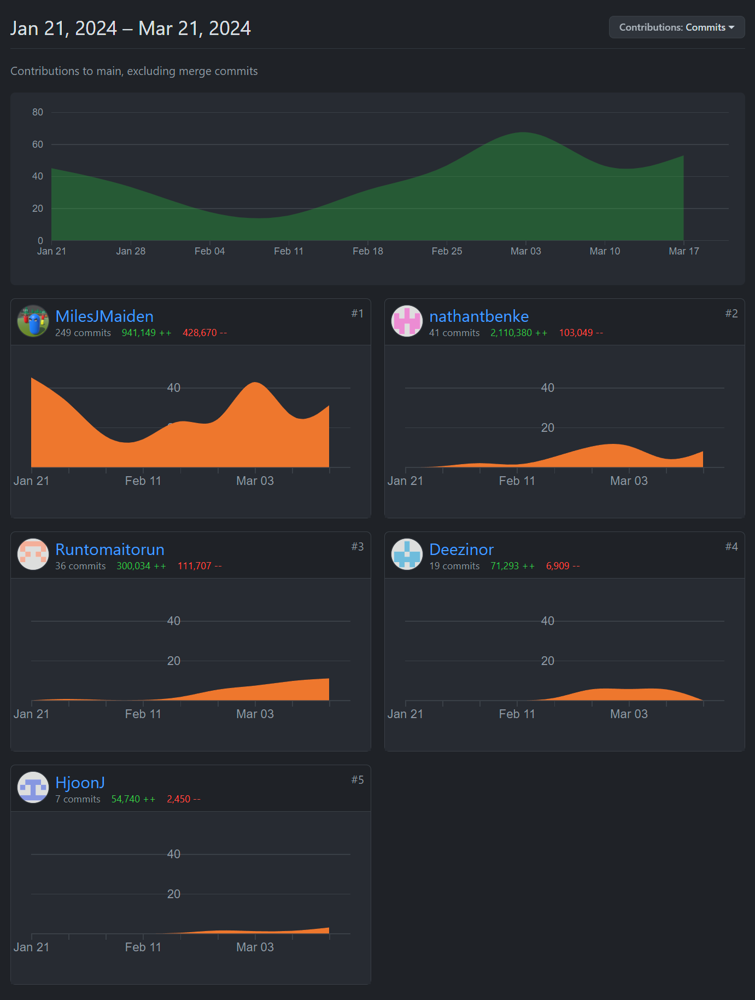
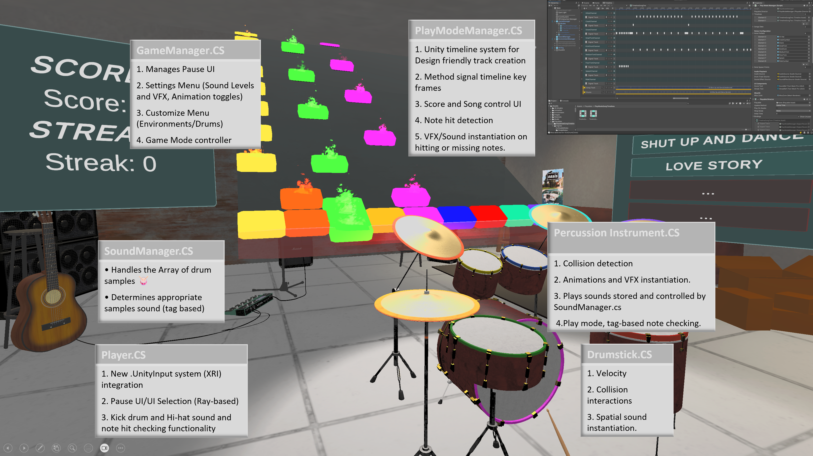
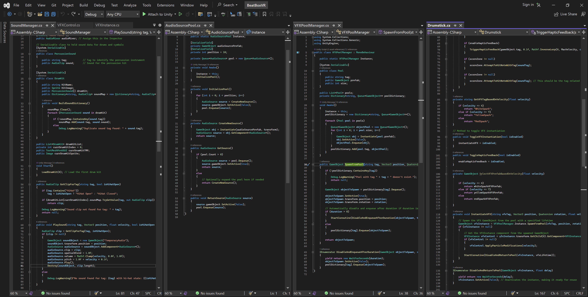
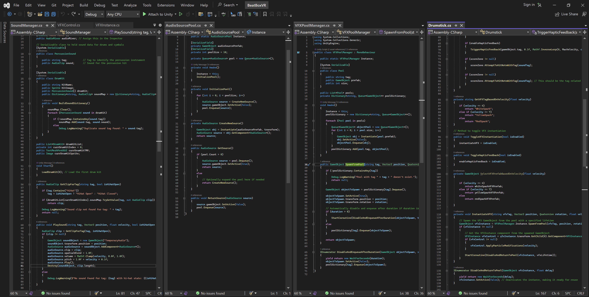

BeatBox-VR, an immersive drumming experience
A Goldsmiths, University of London Virtual Reality Project
Personal Introduction
My name is Joshua J. Davies, a Unity Developer and VR Enthusiast with a passion for creating immersive and interactive virtual reality experiences.
The Team
Our team was composed of talented set of individuals, each bringing their own expertise and unique skill sets:
Joshua J. Davies (me): Project Manager, Lead Developer/Programmer, Audio, and interaction designer.
I oversaw four 2-week project sprints, ensured milestones were met, and communicated effectively throughout. Designed and programmed the core features/mechanics of the game, implemented audio-visual integration and feedback loops.
Other team members
Nathan Thomas-Benke — (Sound Designer, Programmer, UI)
Jake Boulton — (UI/UX Design, 3D Artist)
Mai Ye — (VFX Artist, Programmer)
Hwanjoon Jang — (QA, UI/UX Design)


Concept and Theme
Our project, "BeatBox-VR", is a virtual reality drumming experience that allows players to play and interact with a full drum set in a 3D environment.
Inspired by the power of music and the immersive capabilities of VR technology, our objective was to create a game that not only teaches the fundamentals of drumming but also provides an entertaining platform for advanced musicians to practice and perform.
The concept was born out of the desire to make musical education accessible and engaging, utilizing the tactile and immersive qualities of VR to simulate a realistic drumming experience. By incorporating features such as customizable drum kits, dynamic sound based on player interaction, and a reactive environment that changes with the player's performance, we aimed to cater to both educational and entertainment aspects.
Related Works
Inspirational Roots:
The gameplay loops, systems, and design of our VR drumming project are heavily influenced by notable predecessors in the music and rhythm game genre, each contributing unique elements that enhance the overall player experience:
Paradiddle: From Paradiddle, we adopted the concept of using VR controllers to simulate the nuanced movements of drumming, focusing on providing realistic feedback that mirrors playing an actual drum set. This has directly influenced the development of our drumstick physics and the interactive, real-time response system.
Guitar Hero and Rock Band: These games introduced a compelling scoring system that rewards players for accuracy and timing. Inspired by this, our game incorporates a similar scoring mechanism where players earn points based on how accurately they hit notes in time with the rhythm.
Rhythm Arcade Games: These games have taught us the importance of syncing visual, audio, and tactile feedback to create a deeply immersive experience that feels rewarding and fun.
Piano Vision: This tool’s educational approach inspired the instructional design of our game. We integrate tutorials and progressive learning curves, helping players learn drumming techniques and patterns.


User Journey Overview
The journey begins in the Free-play mode, where users can familiarize themselves with the drum set and interactions. From there the player may open the pause menu, containing options such as entering different modes (Free-Play, Play Along, Tutorial and Challenge Mode), drum and environment customization, and settings including toggling haptics, VFX and drum animations.
 



Detailed Contribution Breakdown and Timeline
Weeks 1-2: Establishing Core Mechanics and Sound Feedback
Initialized the project by setting up a basic VR environment in Unity and configuring the XR settings for headset and controller tracking.
Developed the foundational drumstick interaction system, detecting collisions with drums and cymbals and triggering the corresponding sounds.
Weeks 3-4: Implementing UI and Enhancing Sound Design
Built a menu system and implemented responsive UI controls for key settings.
Integrated spatial audio for more immersive acoustics.
Weeks 5-6: Adding Visual Feedback and Performance Tweaks
Added hit VFX/animations and optimized performance (object pooling for particles and audio clips).
Weeks 7-8: Refining PlayModeManager and Customization Options
Improved game state management and synchronization for song playback and modes.
Implemented drum kit customization with persistence.

 

Up-Surge Mechanics
Advanced Hi-Hat System
The Hi-Hat system differentiates between open and closed states to deliver more realistic audio/visual feedback.
Object Pooling Systems for VFX and AudioSources
Dedicated pools reduce instantiation overhead and improve VR framerate stability by reusing VFX and audio objects efficiently.
Conclusions and Reflections
This project challenged and expanded my skills in VR development, from creating immersive audio experiences to designing intuitive user interfaces and complex gameplay mechanics.
The advanced hi-hat system and customizable drum kit features pushed realism while enabling personalisation.
Looking forward, I’m keen to continue refining the application with more centralized systems, deeper spatial audio, and an even more scalable architecture.